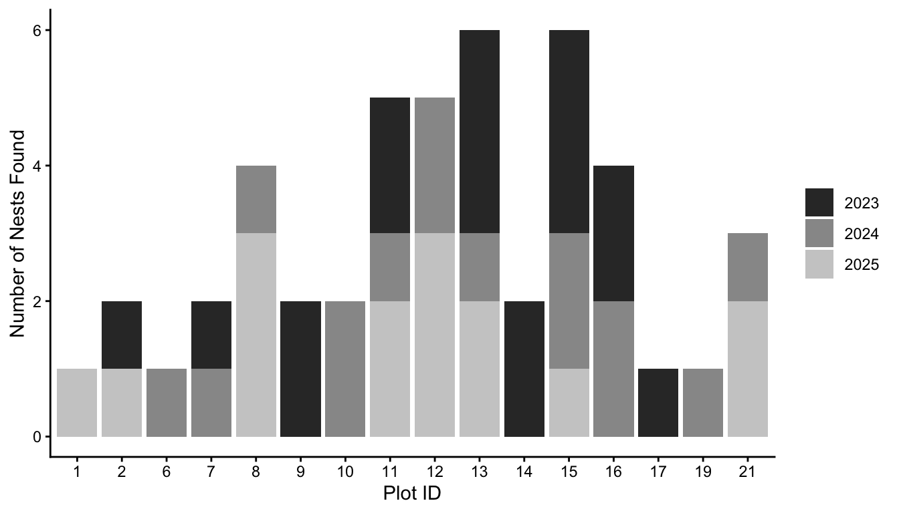
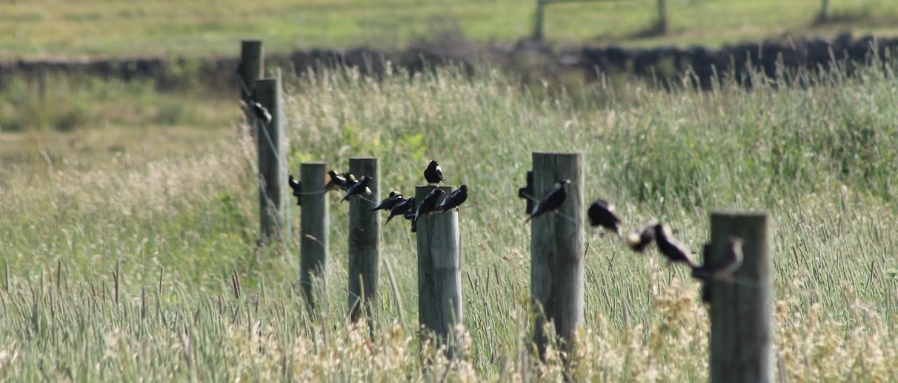
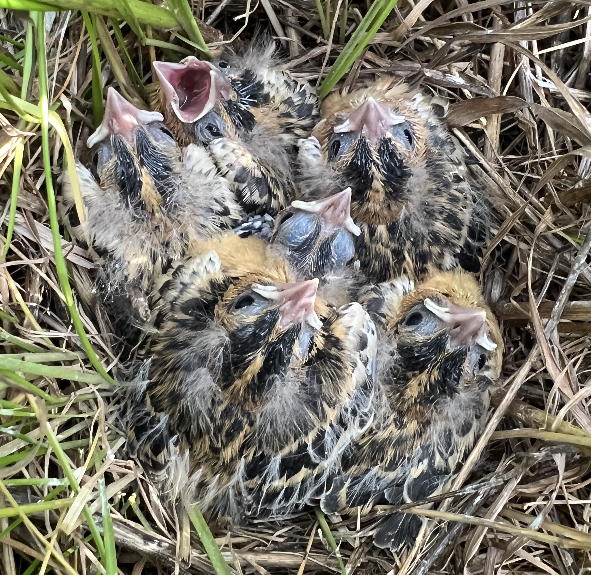
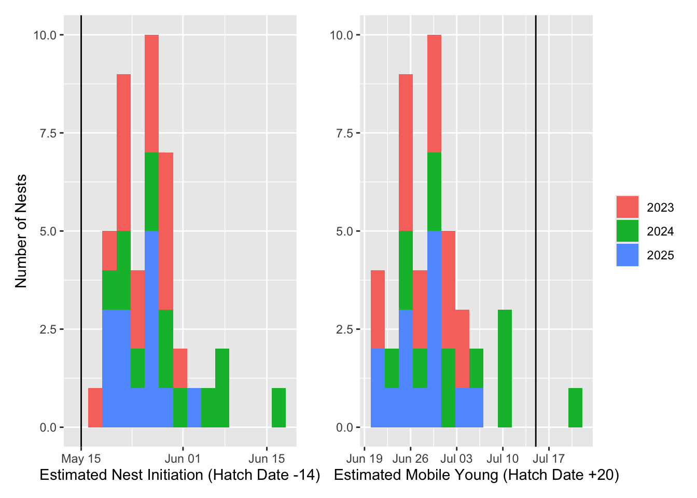
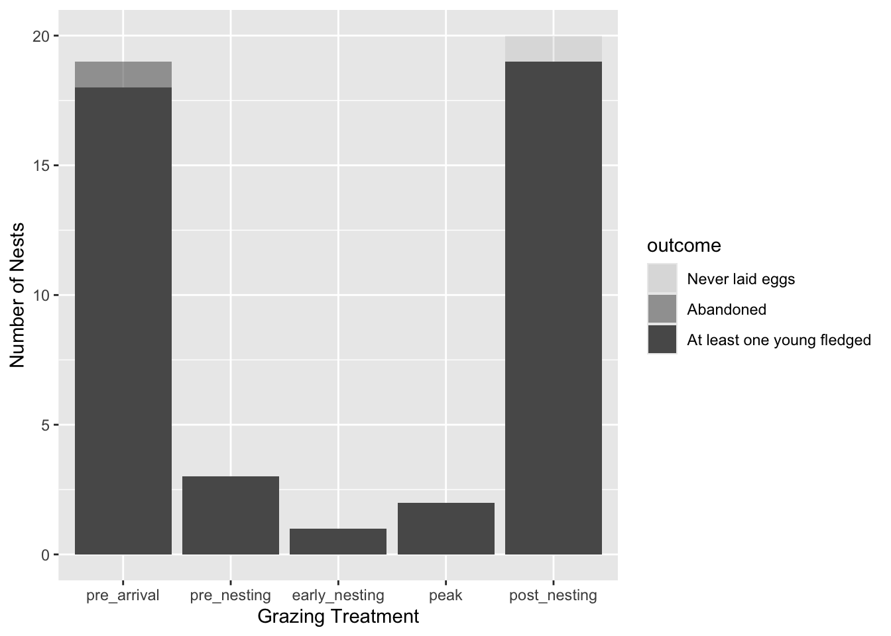
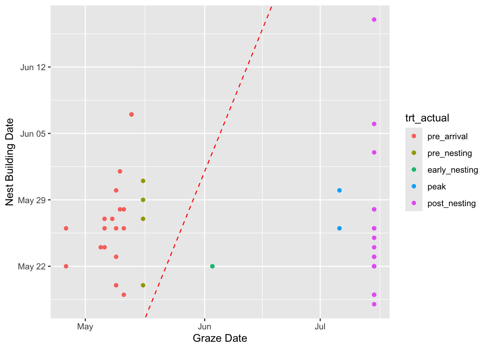
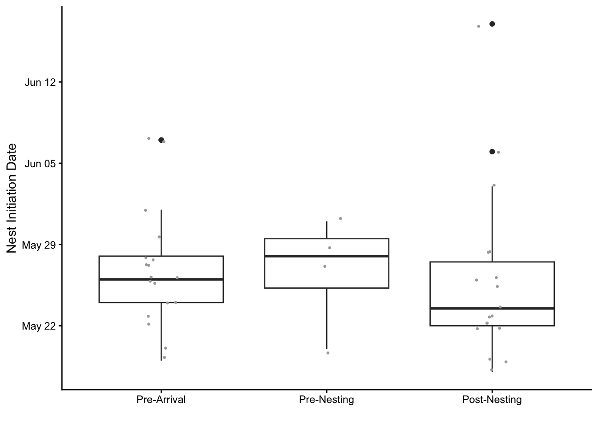
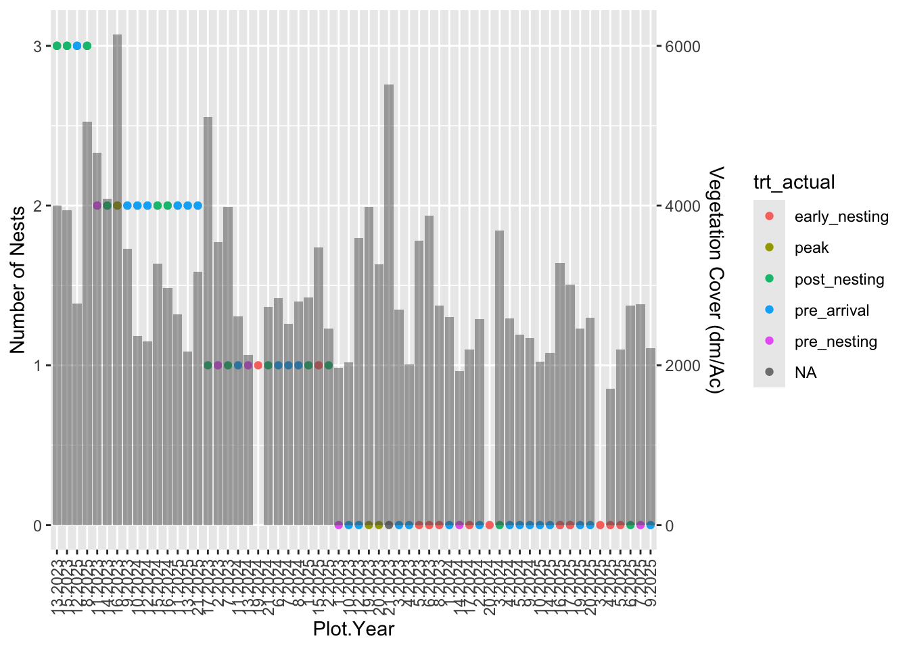

Experimental Design
This study, carried out in Appleton Farms’ 100+ acre Great Pasture in Ipswich, MA, was designed to explore grazing strategies that help alleviate a common production/conservation trade-off.
Bobolinks are a grassland nesting bird, a guild which initially benefited from agricultural clearing in the 1800s, but has since been in steep decline due to habitat loss, species invasions, changing climate, and agricultural intensification. Bobolinks nest in grasslands from late May through early July, making them sensitive to disturbance precisely during the optimal harvest window for most common forage species.

A common bobolink conservation practice involves delaying harvest until sometime between July 15th, when most birds are done nesting, and August 15th, when they migrate south. At this point forage quality and economic value have declined substantially, placing a heavy burden on grass farmers. This burden is increased for graziers, whose livestock must graze elsewhere for much of the season.
Our team’s study examined the impact of grazing prior to peak nesting activity on both nesting success and quality of summer forage. Our experiment was based on research by Dr. Noah Perlut, who found that harvesting grass through early June, followed by an extended rest period, allowed bobolinks to successfully re-nest in fields. This premise takes for granted that harvest interrupts active nesting attempts, focusing instead on what happens during the subsequent rest period. In addition to timing of early season harvest, we also considered the relative influence of forage height, tree and wetland distribution within the study area.
Our primary treatment, harvest timing, was implemented by dividing Appleton’s Great Pasture into twenty roughly two-acre plots. Plot locations were selected to maximize the chance of nesting activity based on general knowledge of where bobolinks tend to nest in fields (away from wooded edges and trees, outside of wetlands) and specific experience with territorial activity in the Great Pasture.


Each year from 2023 through 2025, a herd of ~25 cows with their calves was rotated through the pasture according to prescriptions for each plot: pre-arrival (prior to May 15th), pre-nesting (May 15th-23rd), early-nesting (May 24th - June 9th), or post-nesting (after July 15th). Prescriptions were evenly distributed, and varied from year to year.
(Image of GP with prescriptions).
Nests were found by flushing females, or observation of females returning to nests. Across three years, we found 47 bobolink nests. Once nests were found, they were visited every three days to assess timing and success rate of each nest by recording the number and status of eggs and young.


As can be seen in the map. Nests were unevenly distributed across plots. The following figure shows the distribution of these nests spatially (across plots) and temporally (over years) Any plots not included did not have nests found in them.
To verify that our harvest treatments aligned with the timing of nesting activity at our location, we estimated the date when nests were initiated and when fledglings would be mobile. We used observed hatch dates and background on bobolink’s reproductive cycle timing. This step was important because the research our study was based on took place in northern New England, which could have meaningfully different phenology.

Across years, the timing nests found in our study aligned with the typically understood nesting period of May 15 through July 15. Over the course of our study, harvesting outside of this period would have interrupted only the latest nests in 2024.
Grazing Treatment x Nest Locations
Given that our nests occurred during the expected period, we moved on to explore our primary research question: How does harvest timing affect bobolink nesting success? Our first approach was to assess how many nests were found in plots assigned each of our grazing treatments.

Unsurprisingly, most nests were found in fallow plots, followed closely by plots grazed prior to bobolinks arrival on May 15th. Nearly all nests found were ultimately successful in fledging at least one young. Some successful nests were found in plots that were grazed between May 16th and July 15th, although far fewer than outside this period.
While this technically supports the premise that grazing during nest initiation can lead to successful re-nesting, practically this approach led to greatly reduced nesting activity. One potential explanation of these results is that as territory establishment and nest initiation was interrupted in grazed plots, the bobolinks simply moved to nearby undisturbed plots and did not have any need to return and re-nest in the impacted plots.
This represents a limitation of our experiment design, where a relatively fine-scale mosaic of harvest timing took place in close proximity. A larger-scale disturbance that did not allow for in-field migration may have resulted in higher re-nesting in impacted areas. A silver lining of this limitation may be that in fact this type of mosaic is common in rotationally grazed pastures, and the ability of bobolinks to migrate in-field would allow them to adapt their nesting areas in-season. Further research into the spatial and temporal dynamics of in-field refuges remains an interesting direction.
The interpretation that bobolinks did not re-nest following harvest is supported by data showing the relationship between graze date and nest initiation date:

Pre-arrival and post-nesting treatments can be thought of as indirect treatments, as bobolinks and cattle did not interact during the nesting period in these plots. The four nests found in the pre-nesting treatment (yellow) were in fields that were disturbed at the very beginning of this period (May 16th). The two successful nests in plots that were grazed during the peak nesting period were subjected to grazing only after they had fledged young, in early July, so they can essentially be considered fallow plots. The nest found in the early-nesting period (green) was the only nest initiated prior to grazing, meaning it survived the grazing event rather than was re-established during the post-grazing period.
Differences in Nest Characteristics
As mentioned above, nearly all nests fledged at least one young. On average, nests fledged about four young. We interpreted young as having fledged if they were consistently observed upon repeat visits to the nest, up to the age (~10 days) where they would be expected to fledge naturally. There is some chance that young were predated after the last visit where they were seen alive, whether in the nest or after they fledged, but it was beyond our ability to gather that data. While there were only minor differences between nests in plots grazed outside of the active nesting period, the few others fledged only one or two young.

While we did not see re-nesting following regrowth, we were still curious whether our early impacts delayed initial nesting attempts as bobolinks waited for grass to reach an acceptable level for nesting.

In fact, we saw a small effect of early season impact on nest initiation. Nests in post-nesting (fallow) plots were built the earliest on average, followed by nests grazed before bobolinks arrived, and then nests grazed during the third week of May. The difference between pre-arrival and post-nesting initiation dates was, however, only 3-4 days on average.
Next, we looked at if in fact the amount of grass present was driving nest initiation. We were hopeful that if this were the case, grazing intensity could be moderated to leave more grass behind during early season harvests.

The figure on the left shows the distribution of nests by the amount of cover in their plot. The figure on the left contextualizes this distribution by showing the distribution of grass cover across all plots at the same point in time. The relationship of these distributions can be seen together in the figure below.

In general, the distribution of cover across nests, and plots during nest initiation looked similar. Fields with most nests had typical cover, not skewed higher than average as one may predict. This suggests that some moderate impact early in the season may be beneficial (or at least not detrimental) if grass can recover to ‘normal’ levels. This may be even more the case the case where vegetation/thatch is very dense or tall.
This first round of analysis supports the management practice of harvest during the pre-arrival period, but suggest detrimental impacts of harvest once bobolinks have arrived, even prior to nest initiation. Based on these results we suggest minimizing the disturbance of cattle moving through once birds are present, but not being overly focused on intensity of impact, especially before the birds arrive. (Note: heavy, close mowing may be a different story.) We are fortunate that grass recovers quickly during this time period, especially under careful rotational grazing.
Next up.. incorporating spatial impacts, integrated modeling, and forage quality.